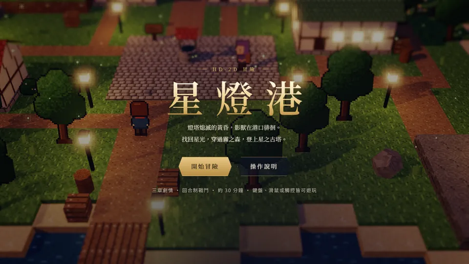
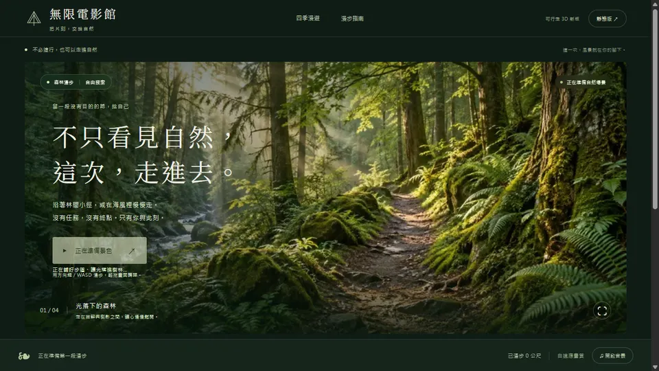

打開瀏覽器，
走進另一個世界
三個在瀏覽器直接執行的互動作品：HD-2D 回合制冒險、WebGPU 可行走的自然漫遊，以及它的經典靜態版。免安裝，桌機與手機都能玩。
回合制冒險

星燈港
燈塔熄滅的黃昏，找回星光、穿過霧之森、登上星之古塔。三章劇情加兩場頭目戰。
開始冒險3D 漫遊

無限電影館 · 自然漫遊
不只看見自然，這次走進去。四季場景、PBR 材質與即時光影，用 WASD 或觸控漫步。
走進森林放鬆小品
無限電影館 · 經典版
森林、海岸、秋葉與雪景，搭配合成自然音、呼吸練習與休息計時，給自己一段不必趕路的時間。
慢慢看